Конвектор BORK R710 GREY
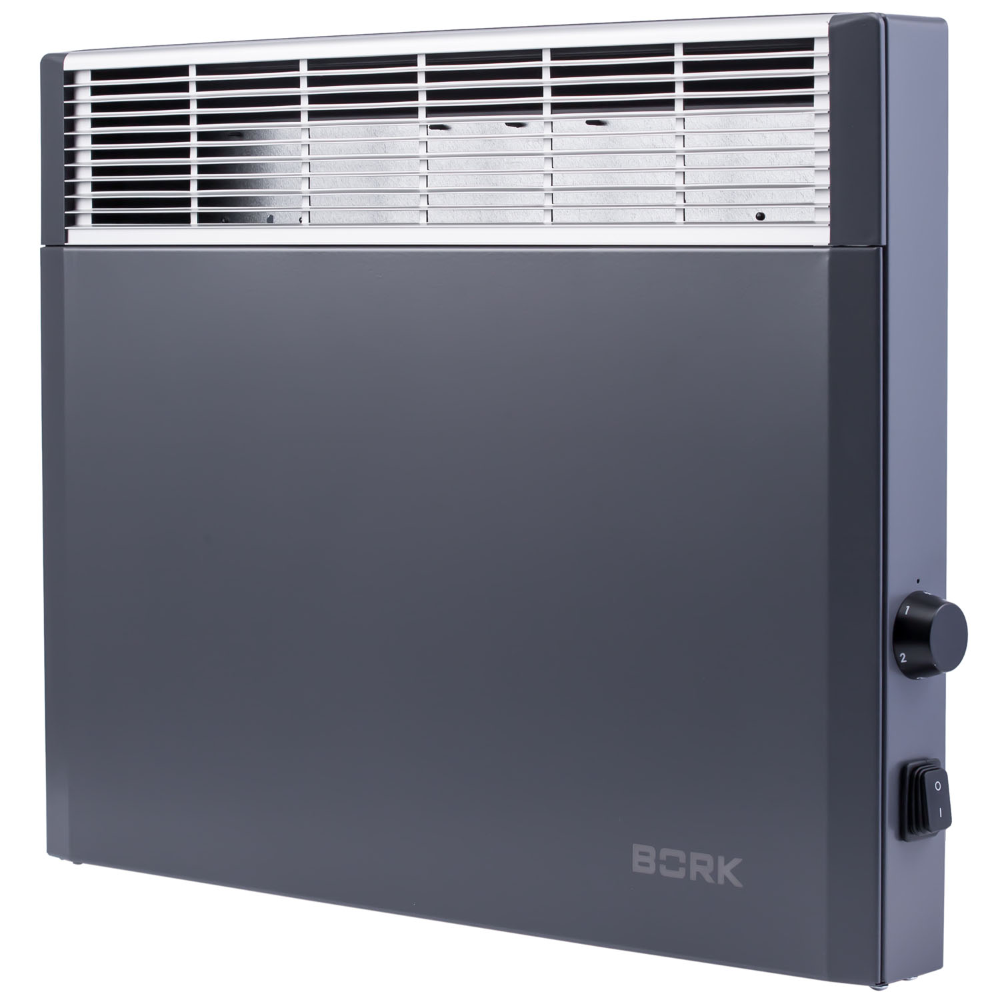 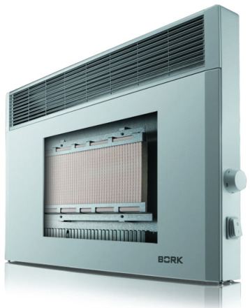Уникальная комбинация конвектора и теплового аккумулятора, обеспечивает высокую эффективность обогрева и экономию электроэнергии. Запатентованная технология Magmatic поддерживает естественную конвекцию воздуха, даже когда обогреватель отключается, обеспечивая в помещении правильный баланс температуры и комфортные условия.
Дополнительный нагревательный элемент Magmatic ™ работает по принципу русской печи: аккумулирует тепло от основного нагревательного элемента и дает дополнительный обогрев.
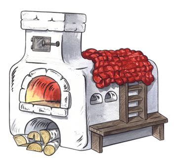Как известно, после того как в русской печи прогорят дрова, сама она еще продолжительное время остается довольно теплой, и греет накопившимся теплом весь дом.
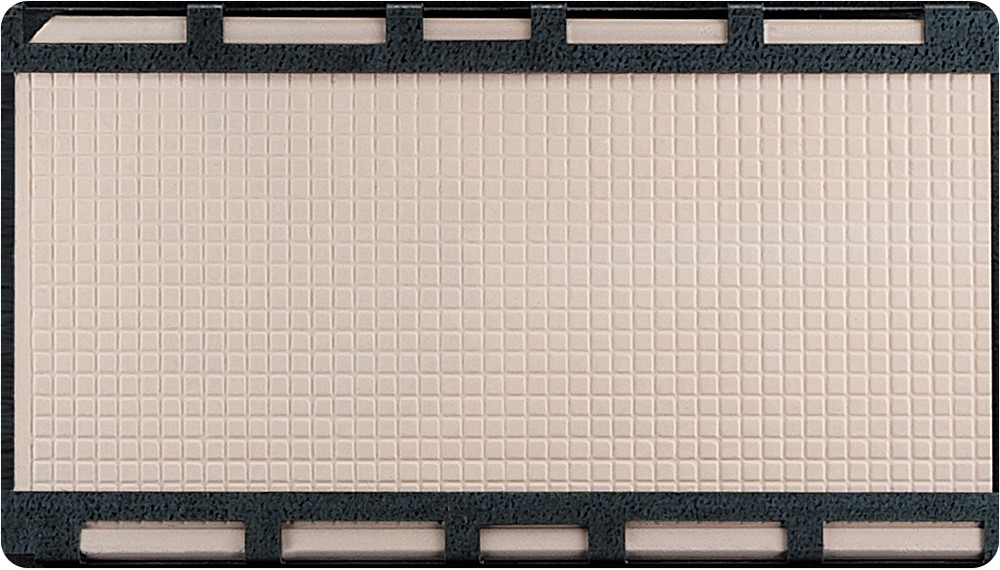При достижении заданной температуры, высокоточный термостат выключает питание и дополнительный тепловой укамулятор Magmatic ™ способен выделять тепло в течение 45 минут, в зависимости от заданной температуры и характеристик помещения.
Нагревательный элемент
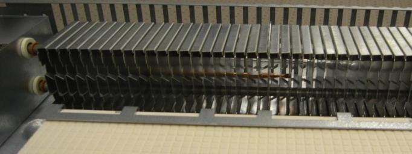Уникальная форма нагревательного элемента позволяет достичь более высокого значения КПД за счет конструкции и увеличенной площади нагрева. Нагревательный элемент выполнен из меди. Медь характеризуется высокой теплопроводностью.
Теплообменники выполнены из силумина. Силумин легко отдает тепло воздуху.
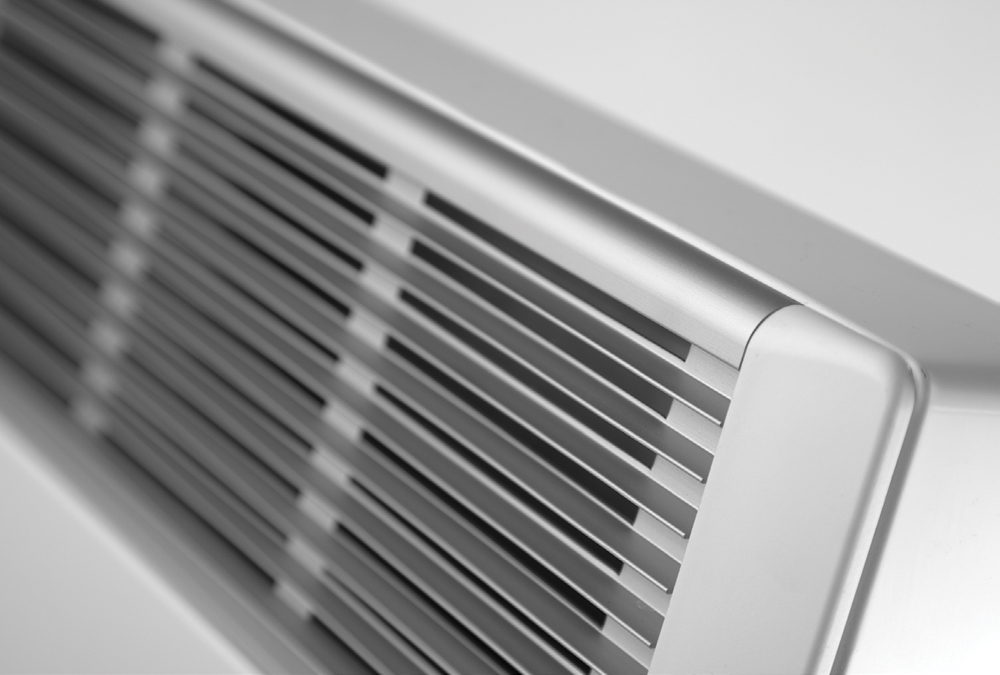Форма корпуса и нагревательного элемента, в виде вертикальных тоннелей для воздушного потока, обеспечивает большую теплоотдачу за счет увеличенной конвекции и увеличенной площади нагрева. Воздух прогревается быстрее при меньшей температуре нагревательного элемента.
Высокая эффективность
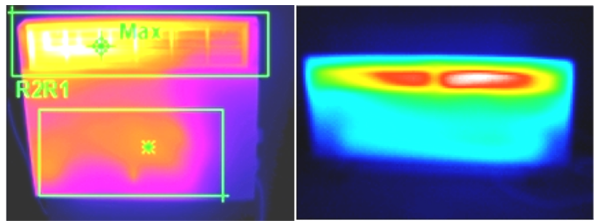В сравнении с обычными конвекторами.
На первой фотографии видно, что конвектор BORK обладает высокой температурой по большей части поверхности. Это обеспечивает увеличенную теплоотдачу за счет излучения.
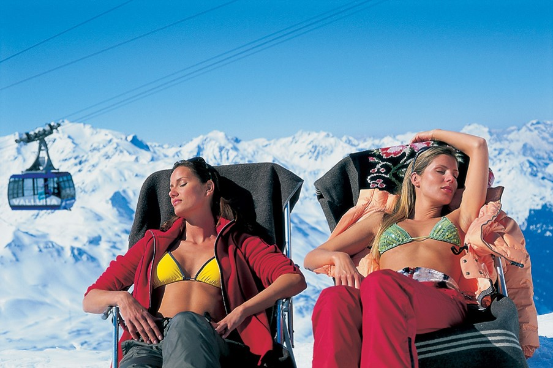Увеличенная теплоотдача за счет излучения позволяет человеку согреться быстрее и эффективнее, при этом так же экономя электроэнергию.
Безопасность
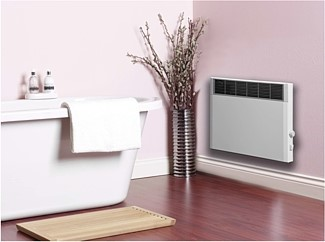Высокий класс защиты IP24 обеспечивает безопасность при эксплуатации конвектора в детских комнатах и помещениях с повышенной влажностью, таких как ванные комнаты.
Аргументы
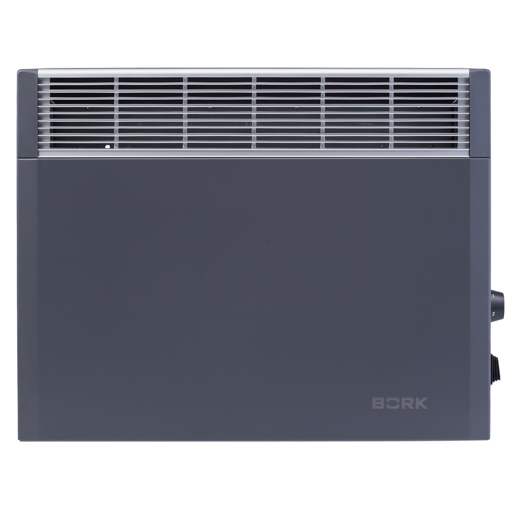- Сделано в Германии!
- Увеличенная пропускная способность воздушного потока
- Увеличенная площадь теплообмена
- Увеличенная теплоотдача
- Два варианта установки
- Стильный немецкий дизайн
- Устойчивая конструкция
- Занимает меньшую площадь
- Легкое управление
- Качественные материалы
- Предназначен для основного отопления и дополнительного
- Небольшое сечение нагревательного элемента
- Эффективен при кратковременном отключении электроэнергии
- Перераспределяет нагрузку на электросеть, сохраняя эффективность
Характеристики
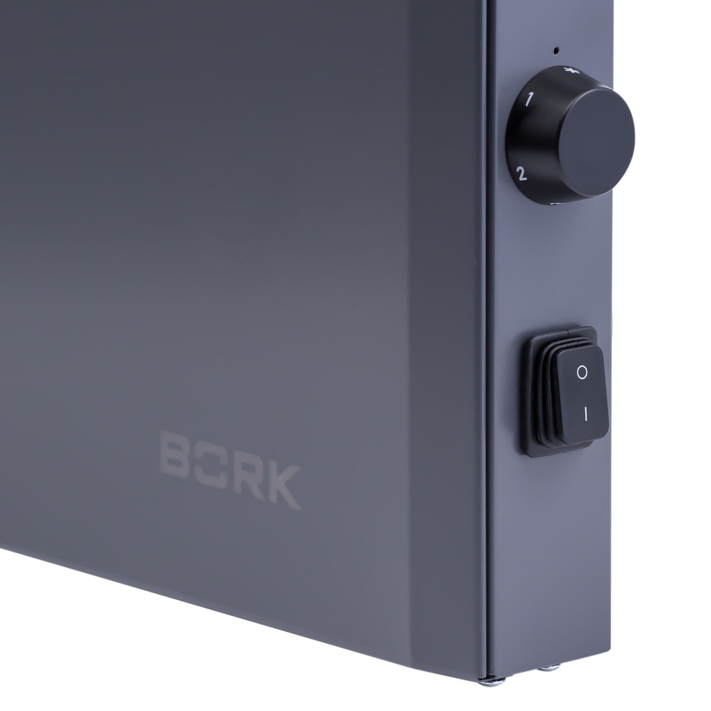
Мощность: 1500 Вт
Число темп. Уровней: 10
Диапазон температур: От +4˚C до +40˚C
Вес: 5,9 кг
Габариты (ВхШхГ): 45х57х8 см
Срок гарантии: 1год
Тип управления: Механический
Степень защиты: IP24
Тип размещения: Напольное/настенное
Материал корпуса: Металл
Цвет: Серый
Страна производства: Германия